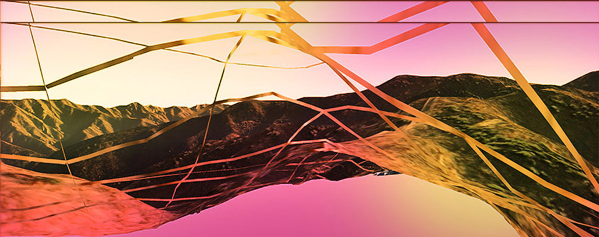

Welcome to my online process book for Graphic Design 2!
On this website, you'll be able to view my work for GRPH-2010. This includes:
- coding sketches
- images of works in progress as well as final forms
- links to my used resources and inspirations
- reading responses